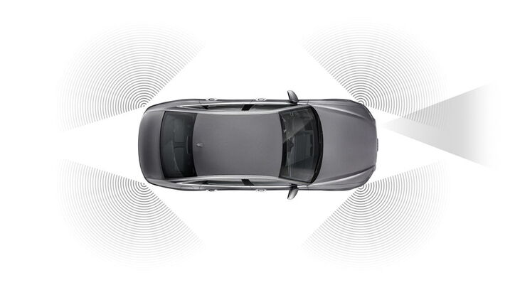

Бизнес-класс со спортивным характером.
Стильный, мощный, высокотехнологичный – это он, Audi S6. Уникальное сочетание строгости и элегантности с неудержимым спортивным нравом – заслуга дизайнеров и инженеров, создавших этот универсальный автомобиль, оснащённый мощным высокотехнологичным бензиновым двигателем и легендарным полным приводом quattro. В распоряжении водителя – самые современные ассистирующие и информационно-развлекательные системы.
Динамика спорткара: факты и цифры
Впечатляющая динамика
Сердце седана Audi S6 – двигатель V6 TFSI объёмом 2,9 л с непосредственным впрыском топлива и турбонаддувом.
Внешний вид: эффектный и заметный знатокам
Внешний вид Audi S6 – яркое и современное отражение языка дизайна бренда, выраженное в спортивной, самобытной и новаторской форме. От базовой модели Audi A6 эта версия отличается рядом особых деталей внешнего дизайна, характерных только для моделей S и включённых в стандартную комплектацию. Корпуса наружных зеркал заднего вида получили эффектную отделку покрытием aluminium. Четыре хорошо заметных хромированных патрубка выхлопной системы украшают эффектный задний диффузор S. Также в оснащение модели входят легкосплавные диски диаметром 20 дюймов. В качестве опции предлагаются 21-дюймовые диски, а также тормозные суппорты, окрашенные в красный цвет.
Корпуса внешних зеркал заднего вида с покрытием aluminium
Диффузор S
Эмоции в чистом виде
Яркое впечатление производит передняя часть Audi S6. Такие выразительные элементы спортивного дизайна, как широкая и стремительная решётка радиатора Singleframe с эмблемой S6, мощные воздухозаборники по бокам и яркая светодиодная оптика, никого не оставят равнодушным.
Салон: комфортабельный, спортивный
Накладки на пороги с подсветкой и эмблемой S (стандартная комплектация) словно приветствуют водителя и пассажиров при посадке в автомобиль. Входящие в штатное оснащение спортивные сиденья S, украшенные эмблемой S, благодаря широчайшему диапазону индивидуальных настроек гарантируют уверенную и удобную посадку. Эмблема S хорошо заметна и на рычаге коробки передач, расположенном на центральной консоли. Покупатели получают традиционную для марки Audi творческую возможность создания индивидуального варианта отделки с использованием опциональных пакетов кожаных элементов и широкого выбора декоративных вставок.
Информационно-развлекательная система
Управление основными функциями информационно-развлекательной системы Audi S6 – в поле зрения водителя или на расстоянии вытянутой руки. Входящая в стандартную комплектацию виртуальная приборная панель Audi virtual cockpit, представляющая собой экран высокого разрешения диагональю 12,3 дюйма, легко настраивается и отображает самую важную для водителя информацию. Управлять панелью можно с помощью переключателей на многофункциональном рулевом колесе. Кнопка VIEW позволяет изменять изображения шкал приборов с крупных на уменьшенные и наоборот. Помимо скорости, оборотов двигателя и данных мультимедиа на экране могут отображаться и другие важные данные, в том числе навигационная карта или показания бортового компьютера.
Акустическая система высшего класса Bang & Olufsen – элемент базового оснащения модели. В состав комплектации 3D Premium входят 15-канальный усилитель выходной мощностью 705 ватт и 16 динамиков, которые позволяют создать атмосферу невероятно реалистичной передачи звуков. Новая функция объёмного звучания погружает пассажиров на передних сиденьях в атмосферу невероятно реалистичной передачи звуков. Доступная опционально топовая версия аудиосистемы Advanced оснащена 19-канальным усилителем и 19 динамиками с функцией объёмного звучания, распространяющегося на весь салон. Высочайшее качество звука доступно всем пассажирам, физически ощущающим своё присутствие в концертном зале.
Неутомимые помощники
Седан Audi S6 может быть оснащён высокотехнологичными радарами, камерами кругового обзора и ультразвуковыми датчиками. Они собирают данные и передают их на центральный процессор ассистирующих систем, который создаёт виртуальную картину пространства, окружающего автомобиль. Электронные ассистирующие системы обеспечивают важную для водителя поддержку его действий в процессе управления автомобилем. Например, в качестве опции предлагается парковочный ассистент plus, который в рамках своих технических возможностей с помощью визуальных и звуковых сигналов облегчает парковку и маневрирование. Система активируется включением передачи заднего хода, кнопкой на центральной консоли или, при желании, автоматически, когда автомобиль приближается к обнаруженному препятствию на скорости не выше 10 км/ч. Покупателям доступен для заказа и пакет ассистирующих систем «Город». В его состав входят несколько электронных ассистентов, существенно облегчающих передвижение в плотном городском потоке.
